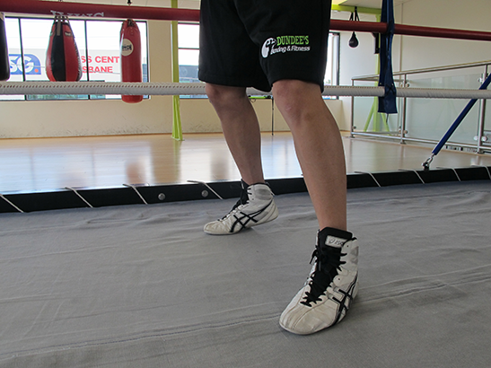
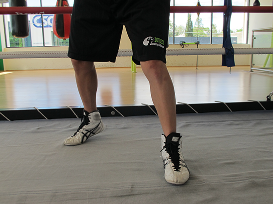
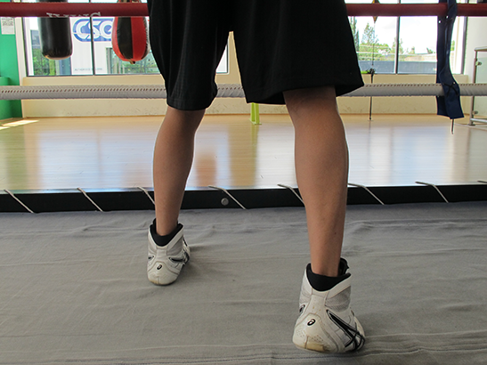

The feet should provide a solid base, with the heel
or the back foot always raised. Stance should never
be too wide or too narrow.

Moving forward, lead with the front foot (the range finder) whilst pushing off with the back foot (the power driver).

Moving backwards, lead with the back foot followed by the front foot.
Your movements
- Move your left foot first when moving to the left; move your right foot first when moving to the right. If moving forward move your front foot first; if moving backwards move your rear foot first.
- Your feet should never be closer than your basic stance. Keep your triangular stance.
- When not punching be on the balls of your feet.
- Keep weight evenly distributed over both feet.
- Keep knees slightly bent.
- Never cross your feet.
- Shuffle your feet rather than jump- keep feet close to the floor.
- When punching be on the ball of the foot you are punching with.
- Work moving in and out as well as circling.
- Practice punching while you move.
- Remember a moving target is harder to hit.
- You control the punching space or distance.
- Your chin belongs in the shoulder of the hand you are punching with.